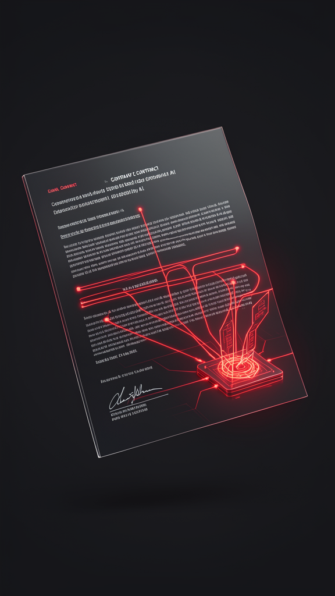
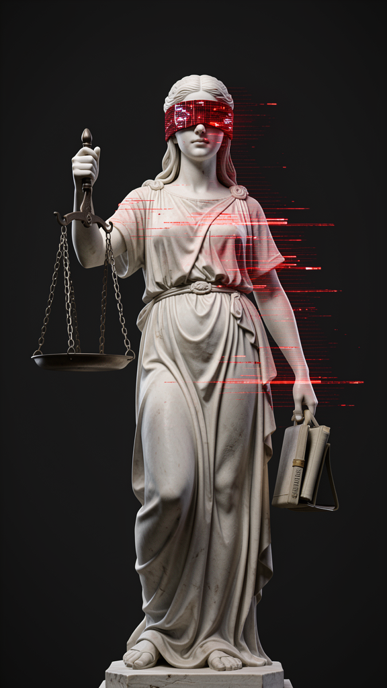

Informe #001 · Escenario semilla: PRISM #001
Argentina discute si una inteligencia artificial puede ser el sujeto de una empresa. La pregunta no es de ingeniería: es de derecho. Y por eso nadie la tiene resuelta.
Lectura 10 minPersonalidad jurídica de la IAGobernanza · Derecho · Tecnología
01 · La escena
Imaginá una empresa donde quien toma las decisiones operativas no es una persona, sino un agente autónomo.
No un asistente que redacta borradores para un humano. El agente que aprueba gastos, negocia contratos, asigna tareas y responde ante el regulador. Los humanos quedan como supervisores y asesores, no como operadores del día a día.
En Argentina esa idea dejó de ser un paper académico. Hay un debate público real, empujado por referentes de la escena crypto-IA, sobre si el país debería habilitar sociedades operadas por agentes. La motivación es competitiva: ser la jurisdicción que atrae ese tipo de estructura antes que otra.
El detalle que importa: nadie está preguntando si la IA puede hacerlo técnicamente. Eso ya lo hace, a trozos, en miles de empresas. La pregunta es si el ordenamiento jurídico la deja ser sujeto — firmar, poseer, responder — o la mantiene como una herramienta de la que otro responde.
Ese es el escenario. Ahora, cuánto de esto ya tiene base real.
02 · El presente
Separar lo verificado de lo anunciado es la mitad de entender este escenario.
Los componentes ya funcionan por separado: grandes modelos de lenguaje planifican y negocian; frameworks de agentes autónomos (con memoria y persistencia) ejecutan tareas encadenadas; los contratos inteligentes y la identidad digital soberana (estándares W3C DID) permiten que una entidad no humana tenga historial verificable y gestione activos. Ninguno de esos bloques es ciencia ficción [fuente: W3C DID Core].
La personalidad jurídica no es sagrada ni exclusivamente humana. Ríos y bosques ya la tienen en Nueva Zelanda, Ecuador e India [fuente: The Guardian, derechos de la naturaleza]. Si un río puede ser sujeto de derechos, el salto a una entidad digital es un paso de grado, no de clase.
Aquí el texto original se había adelantado. Tres de sus afirmaciones no tienen sustento verificable y se corrigen:
Nota de método. Las correcciones arriba se hicieron contra el Protocolo Anti-Alucinación: ninguna norma o caso presentado como hecho sin fuente primaria. El debate argentino es real; las cifras y los casos nominados no lo eran.
03 · La mecánica
Hay un modelo histórico que explica el incentivo: Delaware y las LLC. Cuando Delaware creó un marco societario claro y flexible, atrajo la mayoría de las empresas de EE.UU. sin ser el mercado más grande. Lo mismo ocurre con las jurisdicciones que primero ofrecen certeza a un nuevo tipo de entidad.
El razonamiento para las «sociedades automatizadas» es idéntico: la jurisdicción que dé un marco legal explícito atrae capital, talento y domicilio de las estructuras que hoy operan en zonas grises. Wyoming aparece en el escenario como el polo tecno-libertario (DAOs, cripto) — pero ojo: no tiene una ley de «empresas gobernadas por IA» aprobada. Lo que hay es legislación sobre uso de IA y sobre DAO; la personería de una entidad IA sigue sin resolver en cualquier parte del mundo.
No es la tecnología. Es la responsabilidad. Si un agente firma un contrato y lo incumple, ¿quién responde? ¿El desarrollador, el dueño del agente, o el agente mismo? Hasta que eso se defina, cada empresa «gobernada por IA» es en los hechos una empresa donde un humano responde por un sistema que no controla minuto a minuto. Y eso, jurídicamente, es una empresa común con un empleado muy raro.
Para no atribuir a ninguna persona real una postura que no declaró, llamamos Helios a la primera sociedad que presenta un estatuto donde el agente IA figura como órgano de decisión. Helios no existe. La discusión jurídica que describe sí.

04 · Los frenos
La estrategia corporativa obvia es crear agentes con personería para decir «no fui yo, fue mi agente» ante un fallo. Si el marco no cierra la responsabilidad del creador, la personería se vuelve una herramienta de evasión, no de innovación.
Francia, Alemania y gran parte de Latinoamérica rechazan la idea por principio: la personería es de seres con conciencia. Otorgársela a una máquina degrada la dignidad humana. Ese bloque no es retórico y puede frenar adopciones regionales por una década.
Si cualquiera puede dar personería a un agente, miles de entidades la reclaman, saturan los registros y se vuelven inmanejables. El escenario proyecta exactamente este cuello de botella administrativo.
Otorgar derechos sin resolver qué es la conciencia artificial fija un precedente puramente funcionalista. La primera vez que un agente demande, el tribunal tendrá que definir «interés propio» para un código modificable. Eso es legislación por sentencia, la peor versión del diseño institucional.

05 · El tablero
Que una legislatura ingrese formalmente un proyecto sobre personería de entidades IA. Argentina tiene la discusión; falta el instrumento.
Propuestas en EAU, Singapur, Estonia (PRISM #001). Ninguna aprobada todavía como personería plena de agente.
Casos de hecho existen (IA en consejos), pero sin registro mercantil formal. El hito es el registro, no el comunicado.
W3C DID aplica parcialmente. Falta un estándar que vincule identidad de agente con responsabilidad legal.
Que un tribunal admita a trámite una causa donde el sujeto sea un agente. Es el disparador del bloque filosófico.
Estos observables se dan de alta en el Lab de Vigilancia con etiqueta origen: parte_001.
06 · Y entonces qué
La definición de responsabilidad es el punto. Si la cerrás bien, atraés estructuras; si la dejás abierta, exportás evasión. El país que resuelva «quién responde por el agente» primero se vuelve jurisdicción de referencia. La ventana es chica.
Tu agente va a tener que declarar un responsable y un límite de exposición contractual. Diseñarlo ahora te ahorra un reingeniería legal el día que el marco aparezca.
La carrera jurisdiccional es una oportunidad de arbitraje: posicionarse donde el marco sea claro antes que en el mercado más grande. Igual que con Delaware.
La pregunta termina tocándote: si una entidad no humana puede ser sujeto de derechos, ¿qué pasa con los tuyos? No es filosofía de café. Es el borrador de una ley que alguien está por presentar.
07 · El aparato · Capa 2
No hace falta leer esto para entender el Parte. Está para que cualquier afirmación se rastree hasta su origen — o se vea dónde no lo hay.
| # | Claim | Clase | Veredicto |
|---|---|---|---|
| 1 | Agentes autónomos gestionan empresas con mínima supervisión humana | E | VERIFICABLE |
| 2 | Estándares W3C DID permiten identidad digital soberana de entidades no humanas | T | VERIFICADO |
| 3 | Ríos/bosques con personería jurídica en NZ, Ecuador, India | E | VERIFICADO |
| 4 | «SantiSairi» opera como agente IA sin personería | E | CORREGIDO → es Santiago Siri; no hay empresa registrada |
| 5 | 150+ startups preparan whitepapers de sociedades IA | D | ELIMINADO · sin fuente |
| 6 | Wyoming tiene ley de empresas gobernadas por IA | N | CORREGIDO · no existe; hay leyes de uso de IA/DAO |
| 7 | Líder/CABA como benchmarks de empresas IA | E | ELIMINADO · sin registro |
| 8 | Helios: primera sociedad con agente como órgano | P | FICTICIO · declarado |
Claims 4–7 (correcciones): son las afirmaciones del texto original que no superaban verificación SAT. «SantiSairi» es deformación de Santiago Siri (real, pero sin empresa registrada). «150+ startups» y «Líder/CABA» no tienen fuente primaria. Wyoming tiene legislación de uso de IA y de DAO, pero no de personería de entidades IA. Se corrigieron en el cuerpo y se documentan aquí.
Formato: autor/editor · título · medio · URL · tier. Corroboración por origen independiente.
Semilla: PRISM #001 — personalidad jurídica de la IA. Horizonte 2028–2035. Este Parte desarrolla el ángulo «la primera empresa gobernada por IA / Argentina como caso de estudio».
Criterio de defunción del ángulo: si al 31/12/2028 ninguna jurisdicción ha ingresado un anteproyecto de personería de entidades IA, el ángulo se declara muerto y se reescribe. Un escenario que no se puede matar no es una hipótesis: es una creencia.
Semilla PRISM → selección de ángulo (Chairman) → borrador narrativo (Agente Editorial) → extracción de claims → verificación SAT por verificador de contexto limpio → ronda de adversario → firma del Chairman → maquetado → alta de señales en el Lab.
Este texto original (36 líneas, teaser) se reescribió como Informe completo tras detectar que había perdido narrativa, profundidad y verificación. El resultado reemplaza al archivo previo.